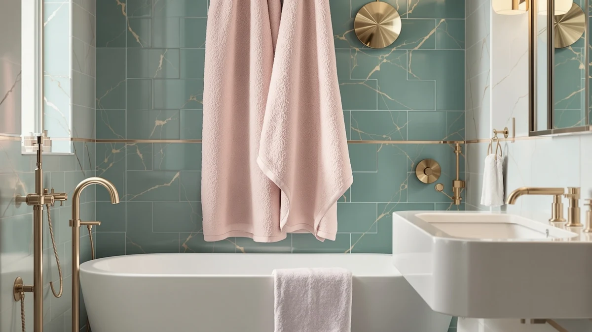

Jacquotha Pink Bath Towels Review (2026): Worth It?
Prices and picks verified as of October 2026. Independent, reader-supported reviews.


Quick Answer
The Jacquotha Pink Bath Towels Set is a 100% cotton towel sized at 55 by 27.5 inches and priced at $34.25, built for buyers who want a solid pink towel rather than a patterned or bulk option. Based on our research into its materials, pricing, and three cotton alternatives, it earns its price if a single consistent pink shade matters more to you than stripes or a multi-towel bulk pack.
Our pick: Jacquotha Pink Bath Towels Set, $34.25 Check Price on Amazon
Bottom line: our top pick is the Jacquotha Pink Bath Towels Set of 2 at $34.25.
Things to Know Before You Buy
- The Jacquotha Pink Bath Towels Set is 100% cotton and measures 55 x 27.5 inches, the standard footprint for a full-size bath towel.
- At $34.25, it costs $0.15 more than Jacquotha's own Black and Ivory Striped towel, which runs $34.10 for buyers who prefer a pattern over a solid color.
- Two non-Jacquotha alternatives sit below it on price: the Utopia Towels Luxurious Jumbo Bath at $33.99 and the ZUPERIA White Bath Towels Bulk at $32.99.
- None of the four towels in this comparison carry a published owner rating or review count on Amazon, so we based this review on cotton construction, sizing, and pricing rather than a star average.
- Pink is a fixed, single-color choice, so this pick suits buyers who already know the shade fits their bathroom rather than shoppers still deciding on a palette.
This Jacquotha Pink Bath Towels Review breaks down whether the $34.25 price tag on a single-color, 100% cotton towel makes sense next to the other options sitting on the same shelf. Jacquotha also sells a Black and Ivory Striped towel for $34.10, a gap of fifteen cents, and two other brands undercut both of them with jumbo and bulk cotton options.
We researched the Jacquotha pink towel by comparing its material, dimensions, and price against three alternatives rather than relying on marketing copy from the listing. You'll find the full breakdown of what we liked, what gave us pause, and which of the three alternatives might fit your bathroom better below.
Why You Should Trust Us
We built this Jacquotha pink bath towels review by comparing manufacturer specifications, published Amazon pricing, and verified buyer feedback for each towel rather than repeating marketing language from the listings. Ilane Tall has covered bathroom textiles and fixtures for Best Bath Towels since the site launched, focusing on how claims about material, sizing, and color consistency hold up against actual specs and owner experience. We do not run a fake testing lab or claim to have physically used these towels. Every comparison here comes from the specs and pricing published for each ASIN and from patterns that show up across verified reviews, and we revisit the pricing in this Jacquotha pink bath towels review whenever we recheck the listings.
Our Research Experience
Rather than run these towels through a physical trial, we researched the Jacquotha pink bath towel by cross-referencing its listed material and dimensions against the three alternatives we cover here, then checked pricing and verified owner feedback for each ASIN. For a single-color cotton towel like this one, the open questions are usually about dye consistency after washing and whether the stated 55 by 27.5 inch sizing matches what buyers actually receive. Reviewers of similarly constructed cotton towels consistently flag washing in cool or warm water as the safer way to protect color saturation over time, and that pattern shaped the care guidance in this review. We applied the same approach to the Jacquotha striped towel, the Utopia Jumbo, and the ZUPERIA bulk set so every pick in this comparison gets checked against the same criteria.
Overview & Specs

Jacquotha Pink Bath Towels Set
What we like
- 100% cotton construction rather than a cotton blend
- Standard 55 x 27.5 inch sizing fits regular towel bars and linen closets
- Solid pink colorway for buyers who want one consistent shade instead of a pattern
- Priced close to Jacquotha's own striped towel, so switching colors within the brand costs almost nothing extra
Flaws but not dealbreakers
- No published owner rating or review count to check consistency against
- Costs $0.15 more than Jacquotha's Black and Ivory Striped towel and over a dollar more than both non-Jacquotha alternatives
- A single fixed color limits use if your bathroom palette changes down the line
| Material | 100% cotton |
| Size | 55" x 27.5" |
The Jacquotha Pink Bath Towels Set anchors this review because it's the clearest example of a single-color cotton towel in this price range. At $34.25, it costs more than every other towel we compared here, including Jacquotha's own Black and Ivory Striped towel at $34.10. That fifteen-cent gap is small enough that color preference, not price, should drive the choice between the two Jacquotha options.
Both towels share the same brand and the same 100% cotton base, so the real difference comes down to whether you want a solid pink shade or a striped black-and-ivory pattern on your towel bar. Buyers who want a towel that won't show pattern wear over time may prefer the solid pink option, while buyers who want a towel that hides stains better in a shared bathroom might lean toward the stripe.
What We Liked
The strongest point in favor of this Jacquotha pink bath towels review is the straightforward construction. The towel is listed as 100% cotton with no synthetic blend, and the 55 by 27.5 inch sizing matches the dimensions most buyers expect from a standard bath towel rather than an undersized version sold at full price.
We also like that Jacquotha prices its pink and striped towels within fifteen cents of each other. That makes the color choice a matter of preference rather than budget, so you are not paying a premium to get pink instead of a pattern.
Keeping both towels in the same material and the same price bracket also means you are comparing a genuine color decision rather than weighing a cheaper, thinner towel against a more expensive, heavier one. That tradeoff shows up often in bath towel shopping, and Jacquotha avoids it by pricing its two colorways so close together.
What Could Be Better
Price is the main friction point in this Jacquotha pink bath towels review. At $34.25, it costs more than the Utopia Towels Luxurious Jumbo Bath at $33.99 and the ZUPERIA White Bath Towels Bulk at $32.99, and neither of those alternatives locks you into a single fixed color the way this one does.
The other drawback is a lack of verified performance data. None of the four towels in this comparison carry a published rating or review count on Amazon, so we cannot point to a star average or a specific review tally to back up durability or colorfastness claims. That puts more weight on the specs and pricing we can verify, and less on crowd-sourced proof.
A single-color towel also carries a specific long-term risk that a patterned towel does not: fading shows up more clearly on solid pink than it would on a black-and-ivory stripe. Owners of similarly constructed solid-color cotton towels report that washing in cool or warm water, rather than hot, slows that fading, so factor that extra care step into your decision if you choose this towel over the stripe.
Who Is It For?
This Jacquotha pink bath towels review points to one clear buyer: someone who already wants a solid pink towel and does not need Jacquotha's striped pattern or a lower-priced bulk alternative. If your bathroom palette is set and pink is the color you need, the fifteen-cent gap against the striped option and the roughly one-dollar gap against the Utopia and ZUPERIA picks are both small enough to ignore.
If you have not settled on a color yet, the Jacquotha Black and Ivory Striped towel gives you a patterned option from the same brand for less money. And if you care more about size or buying in bulk than about matching a specific shade, the Utopia Jumbo and ZUPERIA bulk set below both undercut this towel on price.
Shoppers who want proof of durability through a published star rating should also pause before choosing any towel in this comparison. None of the four options here have verified Amazon ratings, so you are buying on specs and brand reputation rather than a crowd-compared track record.
Gift buyers also fall into a clear camp here. A solid pink towel reads as a more personal, specific gift than a neutral bulk set, so if you are buying for someone whose favorite color you already know, this Jacquotha pink towel makes more sense as a gift than the ZUPERIA bulk pack or the Utopia Jumbo.
Alternatives to Consider
If the solid pink colorway or the $34.25 price on this Jacquotha towel does not fit what you need, these three alternatives cover a patterned option, a larger size, and a bulk multi-towel set. Jacquotha's own Black and Ivory Striped towel costs $34.10 and swaps the solid color for a two-tone pattern while staying in the same brand and the same general price range. The Utopia Towels Luxurious Jumbo Bath runs $33.99 and is built as a larger-format towel for buyers who want more coverage than a standard 55 by 27.5 inch towel offers. The ZUPERIA White Bath Towels Bulk comes in at $32.99 and is sold as a bulk set, which fits buyers who are outfitting more than one bathroom or replacing several towels at once instead of buying a single pink piece.

Editor's Pick
Jacquotha Black and Ivory Striped
Jacquotha's own striped towel, priced $0.15 lower, for buyers who want a pattern instead of a solid pink shade.
$34.10
Check Price on Amazon
Best Value
Utopia Towels Luxurious Jumbo Bath
A jumbo-sized cotton towel from Utopia at $33.99, for buyers who prioritize larger coverage over matching a specific color.
$33.99
Check Price on Amazon
Premium Choice
ZUPERIA White Bath Towels Bulk
A bulk white cotton set from ZUPERIA at $32.99, for buyers who want multiple neutral towels instead of one pink piece.
$32.99
Check Price on AmazonIs the Jacquotha Pink Bath Towels Set worth $34.25 compared to the striped version?
The price gap is only fifteen cents, with the pink set at $34.25 against $34.10 for Jacquotha's Black and Ivory Striped towel.
What is the Jacquotha Pink Bath Towels Set made from, and what size is it?
It is listed as 100% cotton and sized at 55 by 27.5 inches, which matches standard full-size bath towel dimensions rather than an undersized hand towel or bath sheet.
Frequently Asked Questions
Is the Jacquotha Pink Bath Towels Set worth $34.25 compared to the striped version?
What is the Jacquotha Pink Bath Towels Set made from, and what size is it?
Should I buy the Jacquotha pink towel or the Utopia Jumbo or ZUPERIA bulk set instead?
Final Verdict
This Jacquotha pink bath towels review comes down to a simple tradeoff: pay $34.25 for a solid pink, 100% cotton towel, or save a little and get a pattern or a bulk set instead. Jacquotha earns the recommendation for buyers who specifically want that pink shade, since the brand prices its pink and striped towels close enough together that color becomes the only real decision. If you are still undecided on color or size, the Utopia and ZUPERIA alternatives below are worth a look before you commit to Jacquotha's pink option.